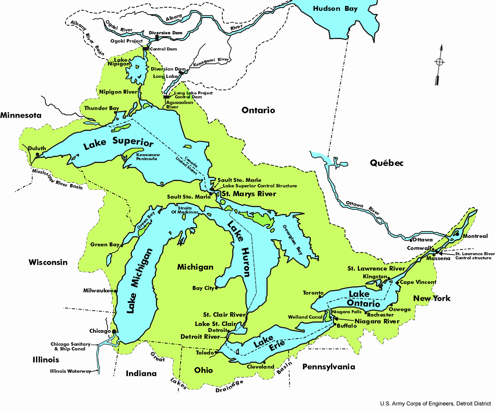
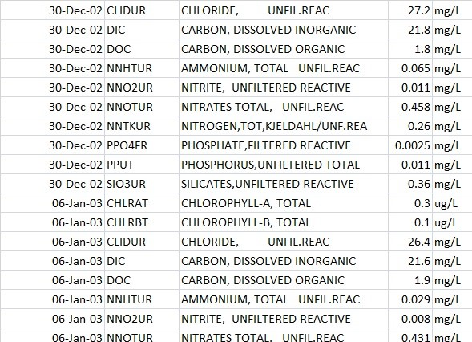
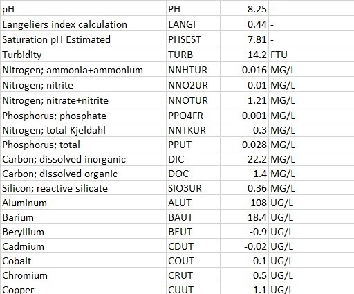
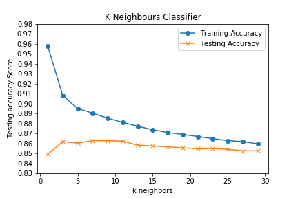
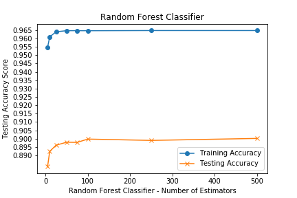
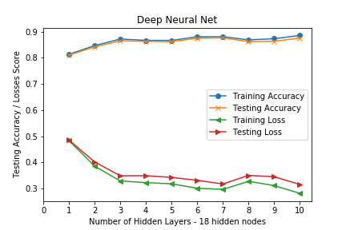
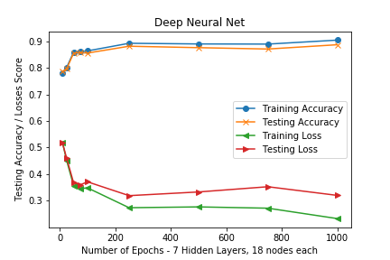

“Thousands have lived without love, not one without water.” by W.H. Auden

In this project we used Machine Learning Models from Scikit Learn and Keras Neural Nets to predict what Great Lake could potentially be the source of a water sample based on samples collected by the Ontario Government.
These machine learning models can then be saved and applied to any unknown samples to classify them to 1 of the 4 Great Lakes Ontario has access to; Lake Superior, Lake Huron, Lake Erie and Lake Ontario.
The first thing that needed to be done was to download the excel files from the Ontario Data Catalogue.
Our group discovered 2 data sources in which machine learning models can be generated; The first and second.


These are 2 slices from the 2 data sources. As you can see the data is in a journal format; where for a given date, time and location samples were taken and analyzed for the following analytes.
The analyte is in a string format (with some spelling mistakes) with a decimal value and various units. There are over 300,000 entries.
The data analyst will need to find a way to convert the labels to a series of unique parameters and standardize on the unit.
The first step was to import the excel books and sheets into pandas dataframes and concatenate them with equivalent columns.
The second step was to pivot the pandas dataframe on the analyte name; this results in >50% of null values in the dataframe.
These null values are unavoidable as samples to be analyzed will be sent for only specific analytes and not all of them do the variety of scientific methods needed for specific analyte measurements.
These null values can be handled by Scikit Learn's SimpleImputer.
SimpleImputer fills the missing values with the means across the column.

 3 models were applied from the Scikit Learn Python library and 1 Deep Neural Net model from TensorFlow Keras Python library:
3 models were applied from the Scikit Learn Python library and 1 Deep Neural Net model from TensorFlow Keras Python library:
1. K Nearest Neighbours
2. Gradient Boosting Classifier
3. Random Forest Classifier
4. Deep Neural Net from TensorFlow with Keras Backend

The first model explored was K Nearest Neighbours.
The following graph is the Training Data F1 score and Testing Data F1 score on different k values.
k is the number of closest neighbours needed for classification of a data point.
In this case the classification is of 1 of 4 groups; the 4 Great Lakes.
The model used in the API has a k value of 9 because it provides >86% F1 score.

The second model explored was the Random Forest Classifier.
The following graph is the Training Data F1 score and Testing Data F1 score on different estimator values.
The number of estimators is a number of decision trees to classify the data.
In this case the classification is of 1 of 4 groups; the 4 Great Lakes.
The model used in the API has an estimator value of 100 because it provides ~90% F1 score.


The third model explored was a Deep Neural Net.
The following 2 graphs shows the Accuracy and Loss for the Training and Testing Data sets for a number of hidden layer and for a number of epochs.
There are 25 input nodes, 4 output nodes and each hidden layer will have 18 nodes.
First the number of hidden nodes was selected to be 18 as 2/3 of the number of input nodes.
Second the number of hidden layers was determined by experimentation; 7 hidden layers.
Third the number of epochs was determined by experimentation and by time constraints; 1000 epochs.
The model used in the API has 25 input nodes, 4 output nodes and 7 hidden layers of 18 nodes over 1000 epochs which provides ~90% F1 score.
The last model, Gradient Boosting Classifier, was run using default values and gave a ~90% F1 score.
Select the model below and recieve F1 scores for the 4 lakes and a weighted average.